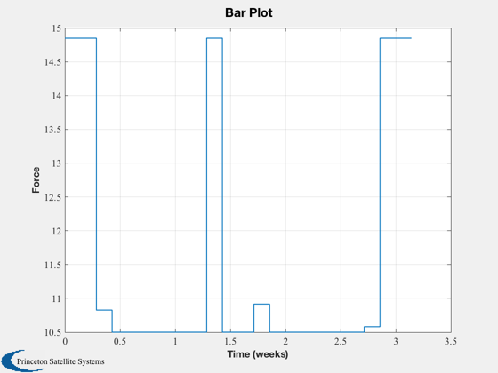
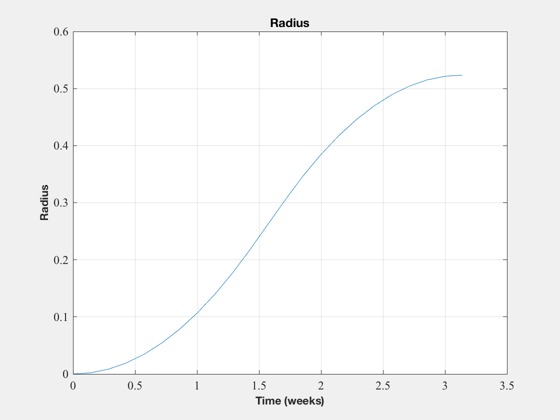

Perform an optimal transfer from earth to mars orbits.
------------------------------------------------------------------------
See also Constant, BarPlot, NewFig, TimeLabl, TitleS, XLabelS, YLabelS,
Mag, OptimalTrajectory, LTSpiral, LinOrb, Planets
------------------------------------------------------------------------
Contents
clear f;
p = Planets( 'rad', [3 4] );
aU = Constant('au');
muSun = Constant('mu sun');
aEarth = aU*p.a(1);
aMars = aU*p.a(2);
n = sqrt(muSun/aEarth)/aEarth;
dVEarthToMars = LTSpiral( p.a(1)*aU, p.a(2)*aU, [], muSun )
duration = dVEarthToMars*1000/(0.4/127)/86400
dT = 86400;
[a, b, c, d] = LinOrb( [], n, [] );
dVEarthToMars =
5.655166502390202
duration =
20.781427829963988
We only care about the orbit radius, radial velocity and tangential velocity
f.a = a([1 4 5],[1 4 5]);
f.b = b([1 4 5],[1 2]);
t = (0:22)*dT;
x0 = [0;0;0];
rF = aMars - aEarth;
yDot = -3*n*rF/2;
xF = [rF;0;yDot];
uMax = 0.0105/127;
[err, u, x] = OptimalTrajectory( x0, xF, t, uMax, f );
[t, c] = TimeLabl( t );
mU = Mag(u);
u = 1000*mU*127;
dV = 1000*sum(mU)*dT
BarPlot(t, u )
XLabelS(c);
YLabelS('Force');
NewFig('Radius')
plot( t, x(1,:)/aU);
XLabelS(c);
YLabelS('Radius');
grid
TitleS('Radius')
dV =
1.725072454866186e+05
 